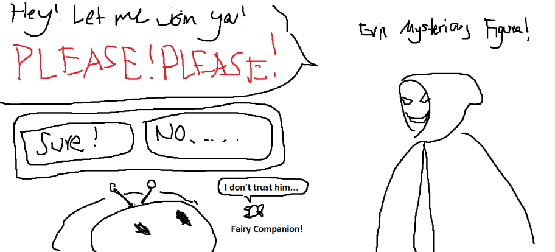

Hi! This is the blog for a Roblox game that I worked on at San Jose State University for the Cyber CSU WITH Initiative. This is a timeline of development that eventually devolves into my opinions on the project.
This game never ended up being released :( which means that this is its proof of existence.
Here's the villain character we made. Aptly named, "Evil Hackerman".
We began with brainstorming many of the basic elements of our game. We were given a general set of educational goals, but little in the specific details. For example:
The communication with leadership in this project wasn’t the best. We knew that this was supposed to be a game to educate K-6 audiences on basic internet safety, and it was supposed to be used in schools? We made a lot of assumptions and went with our instincts. We had a lot of personal experiences we drew from since we grew up with the internet.
We pretty quickly settled on Roblox as our game platform:
Many popular Roblox games are very formulaic, which ends up being a benefit for us. We believed if we adapted familiar game mechanics and stories, we’d need less introduction and onboarding. “Which game genre’s story structure and game mechanics were best suited for our topic and for trying to educate?”
Honestly, my gut instinct was a horror game - You learn fast when you’re a small child scared for your life. A horror game could easily fit our cybersecurity theme by framing digital issues like hackers, child predators, and viruses as monsters. Horror games commonly feature puzzle solving in order to escape and win. In the short course of a horror game, you could reinforce many habits, which we could connect to beneficial real world habits.
In the end, we drew from the concepts and elements of a horror game, but it became something more like a linear adventure game. We retained parts like minigame-based puzzle solving and recognizable enemies since we thought these would fit our goals well. We began storyboarding the plot and experience of our entire game.
Here’s one of the storyboards of our plot I drew. I really liked drawing the little computer characters.

So, with ideas in hand, it was time to actually start making things. Of course, because we had chosen such an easy platform to work with and we were all great students, we figured we could finish three levels before the end of the year, maybe even the semester. That was very greedy. This was maybe October, and our semester ended in December.
We began by splitting tasks to try prototyping different parts of our game to familiarize ourselves with programming with the Roblox systems. We first organized tasks around building our lobby, which would be the area that players first load into. My task here was pretty simple in just animating the movement of a bus that would deliver players to load into the actual first level of the game.
Then, it was December, and finals season hit, and then it was time to present our semester’s worth (month and a half’s worth) of progress. Frankly, all we accomplished by the end of the first semester was the lobby of our game, which is far more realistic and less grand in scope than three entire levels.
The second semester is where we sat down and figured that reducing our scope to just one level by Summer was a bit more realistic. Through careful analysis and reasoning, we deduced that maybe adding a dedicated art student to our team would help production because we had 9 (Nine) CS students forming a team. The team composition and organizational structure was worked on.
My work this semester consisted around two connected systems for our game. Originally I planned to only create a dialogue system for our game so that the players could interact with characters. I must credit Asadrith on Youtube because I used his Dialogue Kit he provided for free and built off of it. As I was working to mold the foundation he created for our game’s purposes, I started adding my own camera movements and extensions, and I came out with a dialogue/cutscene system. I’d tried to work off of some of the community plugins for cutscene building available, but I generally found it easier to build cutscenes if they were tightly coupled with the dialogue system.
Once I had finished, the weeks had gone by and we were moving toward the final presentation date. With what time we had left, I mostly focused my time on collaborating with the students I shared a game development philosophy with - working on both the small details and larger gameplay mechanics for how we were to teach our concepts.
Finally, it was time to present our year’s work to the expectant CSU professors. We created a presentation and showed a little demo, and then none of us ever touched the project again. It was entombed in the confines of our Roblox accounts, promised to “continue development under new students next semester”.
The feelings that I took away from this project were that while I loved making games, this project reminded me of the importance of soft skills in the workplace.
I should be more confident and vocal in my teams - Not dominating and directing, but inviting discussion to occur with my opinions. There were many design decisions that I really didn’t agree with, but I didn’t speak out against our professor and other team members. The educational aspects of our game ended up being little more than rote memorization, lecture, and direct quizzing. I wanted this game to be a demonstration of how we could use game elements to create a style of learning much more exciting and engaging than that. Our game had a lot of potential to realize this, but we didn’t put enough time and thought to push it to that point.
At the time of writing, I’ve been a part of a much better development team and I’m enjoying my time. I look back at this project, and it taught me a lot about my own values and work philosophy. I learned a lot of warning signs to change something. I don’t regret the time I spent on this game - there are lessons you can only learn by trying to build something and failing.